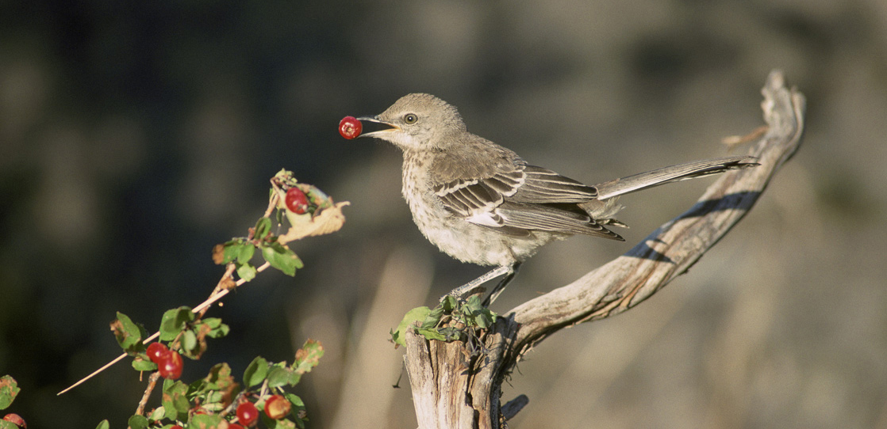
No matter how complex or advanced a machine, such as the latest cellular phone, the device cannot function without energy. Living things, similar to machines, have many complex components; they too cannot do anything without energy, which is why humans and all other organisms must "eat" in some form or another. That may be common knowledge, but how many people realize that every bite of every meal ingested depends on the process of photosynthesis?
- Summarize the process of photosynthesis
- Explain the relevance of photosynthesis to other living things
- Identify the reactants and products of photosynthesis
- Describe the main structures involved in photosynthesis
- Explain how plants absorb energy from sunlight
- Describe how the wavelength of light affects its energy and color
- Describe how and where photosynthesis takes place within a plant
- Describe the Calvin cycle
- Define carbon fixation
- Explain how photosynthesis works in the energy cycle of all living organisms
| # | Lesson | Key Concepts | Source |
|---|---|---|---|
| 1 | Overview of Photosynthesis | Autotrophs, heterotrophs, photoautotrophs, solar dependence, food production | CB 5.1 |
| 2 | Structures & Stages | Chloroplasts, thylakoids, stroma, mesophyll, stomata, light-dependent reactions, Calvin cycle | CB 5.1 |
| 3 | Light Energy & Pigments | Electromagnetic spectrum, wavelength, visible light, chlorophyll a & b, carotenoids, absorption spectrum | CB 5.2 |
| 4 | Light-Dependent Reactions | Photosystems I & II, electron transport chain, chemiosmosis, ATP synthase, NADPH | CB 5.2 |
| 5 | The Calvin Cycle | Carbon fixation, RuBisCO, RuBP, 3-PGA, G3P, reduction, regeneration | CB 5.3 |
| 6 | Connections & Energy Flow | Dry-climate adaptations, prokaryotic photosynthesis, energy cycle, photosynthesis-respiration link | CB 5.3 |
| 7 | Unit Review & Practice Test | All topics — 20-question comprehensive assessment | All |
| Standard | Description | Lessons |
|---|---|---|
| BIO.2e | Photosynthesis as energy transformation | 1, 2, 3, 4, 5 |
| BIO.2e | Relationship between photosynthesis and cellular respiration | 6 |
- Summarize the process of photosynthesis
- Explain the relevance of photosynthesis to other living things
- Identify the reactants and products of photosynthesis
All living organisms on earth consist of one or more cells. Each cell runs on the chemical energy found mainly in carbohydrate molecules (food), and the majority of these molecules are produced by one process: photosynthesis. Through photosynthesis, certain organisms convert solar energy (sunlight) into chemical energy, which is then used to build carbohydrate molecules. The energy used to hold these molecules together is released when an organism breaks down food. Cells then use this energy to perform work, such as cellular respiration.
The energy that is harnessed from photosynthesis enters the ecosystems of our planet continuously and is transferred from one organism to another. Therefore, directly or indirectly, the process of photosynthesis provides most of the energy required by living things on earth. Photosynthesis also results in the release of oxygen into the atmosphere. In short, to eat and breathe, humans depend almost entirely on the organisms that carry out photosynthesis.
Some organisms can carry out photosynthesis, whereas others cannot. An autotroph is an organism that can produce its own food. The Greek roots of the word autotroph mean "self" (auto) "feeder" (troph). Plants are the best-known autotrophs, but others exist, including certain types of bacteria and algae (Figure 5.2). Oceanic algae contribute enormous quantities of food and oxygen to global food chains. Plants are also photoautotrophs, a type of autotroph that uses sunlight and carbon from carbon dioxide to synthesize chemical energy in the form of carbohydrates. All organisms carrying out photosynthesis require sunlight.
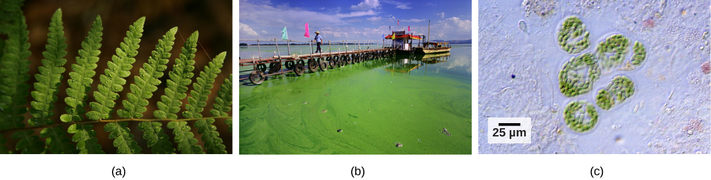
Heterotrophs are organisms incapable of photosynthesis that must therefore obtain energy and carbon from food by consuming other organisms. The Greek roots of the word heterotroph mean "other" (hetero) "feeder" (troph), meaning that their food comes from other organisms. Even if the food organism is another animal, this food traces its origins back to autotrophs and the process of photosynthesis. Humans are heterotrophs, as are all animals. Heterotrophs depend on autotrophs, either directly or indirectly. Deer and wolves are heterotrophs. A deer obtains energy by eating plants. A wolf eating a deer obtains energy that originally came from the plants eaten by that deer. The energy in the plant came from photosynthesis, and therefore it is the only autotroph in this example (Figure 5.3). Using this reasoning, all food eaten by humans also links back to autotrophs that carry out photosynthesis.
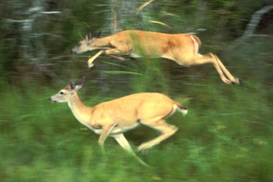
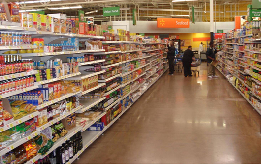
Major grocery stores in the United States are organized into departments, such as dairy, meats, produce, bread, cereals, and so forth. Each aisle contains hundreds, if not thousands, of different products for customers to buy and consume (Figure 5.4).
Although there is a large variety, each item links back to photosynthesis. Meats and dairy products link to photosynthesis because the animals were fed plant-based foods. The breads, cereals, and pastas come largely from grains, which are the seeds of photosynthetic plants. What about desserts and drinks? All of these products contain sugar — the basic carbohydrate molecule produced directly from photosynthesis. The photosynthesis connection applies to every meal and every food a person consumes.
Why are carnivores, such as lions, dependent on photosynthesis to survive? Trace the energy from the sun through a food chain to explain your answer.
- Identify the reactants and products of photosynthesis
- Describe the main structures involved in photosynthesis
- Distinguish between the two stages of photosynthesis
Photosynthesis requires sunlight, carbon dioxide, and water as starting reactants (Figure 5.5). After the process is complete, photosynthesis releases oxygen and produces carbohydrate molecules, most commonly glucose. These sugar molecules contain the energy that living things need to survive.
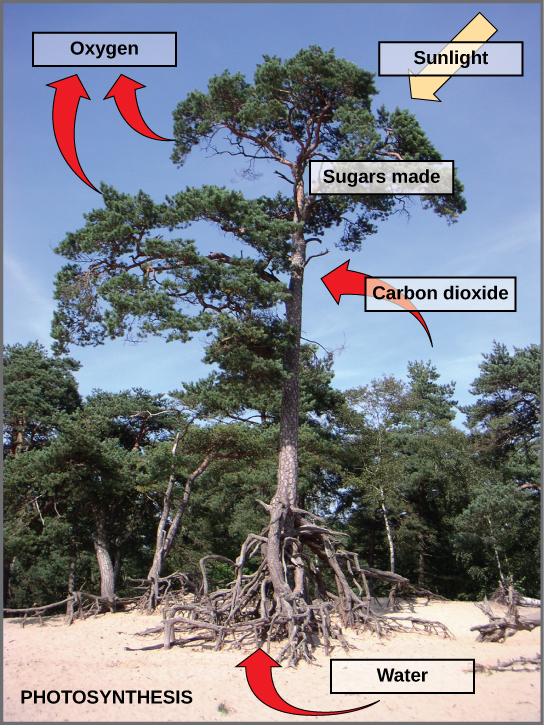
The complex reactions of photosynthesis can be summarized by the chemical equation shown in Figure 5.6.
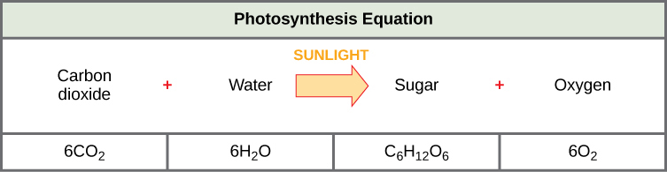
Although the equation looks simple, the many steps that take place during photosynthesis are actually quite complex, as in the way that the reaction summarizing cellular respiration represented many individual reactions. Before learning the details of how photoautotrophs turn sunlight into food, it is important to become familiar with the physical structures involved.
In plants, photosynthesis takes place primarily in leaves, which consist of many layers of cells and have differentiated top and bottom sides. The process of photosynthesis occurs not on the surface layers of the leaf, but rather in a middle layer called the mesophyll (Figure 5.7). The gas exchange of carbon dioxide and oxygen occurs through small, regulated openings called stomata.
In all autotrophic eukaryotes, photosynthesis takes place inside an organelle called a chloroplast. In plants, chloroplast-containing cells exist in the mesophyll. Chloroplasts have a double (inner and outer) membrane. Within the chloroplast is a third membrane that forms stacked, disc-shaped structures called thylakoids. Embedded in the thylakoid membrane are molecules of chlorophyll, a pigment (a molecule that absorbs light) through which the entire process of photosynthesis begins. Chlorophyll is responsible for the green color of plants. The thylakoid membrane encloses an internal space called the thylakoid space. Other types of pigments are also involved in photosynthesis, but chlorophyll is by far the most important. As shown in Figure 5.7, a stack of thylakoids is called a granum, and the space surrounding the granum is called stroma (not to be confused with stomata, the openings on the leaves).
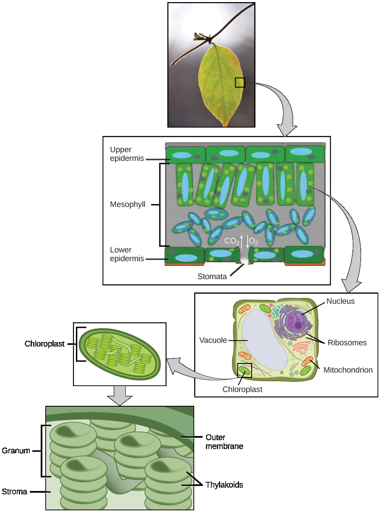
Photosynthesis takes place in two stages: the light-dependent reactions and the Calvin cycle. In the light-dependent reactions, which take place at the thylakoid membrane, chlorophyll absorbs energy from sunlight and then converts it into chemical energy with the use of water. The light-dependent reactions release oxygen from the hydrolysis of water as a byproduct. In the Calvin cycle, which takes place in the stroma, the chemical energy derived from the light-dependent reactions drives both the capture of carbon in carbon dioxide molecules and the subsequent assembly of sugar molecules. The two reactions use carrier molecules to transport the energy from one to the other. The carriers that move energy from the light-dependent reactions to the Calvin cycle reactions can be thought of as "full" because they bring energy. After the energy is released, the "empty" energy carriers return to the light-dependent reactions to obtain more energy. The two-stage, two-location photosynthesis process was discovered by Joan Mary Anderson, whose continuing work over the subsequent decades provided much of our understanding of the process, the membranes, and the chemicals involved.
Describe the two stages of photosynthesis and where each takes place within the chloroplast. How do the two stages connect to each other through energy carrier molecules?
- Explain how plants absorb energy from sunlight
- Describe how the wavelength of light affects its energy and color
- Explain the role of different pigments in photosynthesis
How can light be used to make food? It is easy to think of light as something that exists and allows living organisms, such as humans, to see, but light is a form of energy. Like all energy, light can travel, change form, and be harnessed to do work. In the case of photosynthesis, light energy is transformed into chemical energy, which autotrophs use to build carbohydrate molecules. However, autotrophs only use a specific component of sunlight (Figure 5.8).
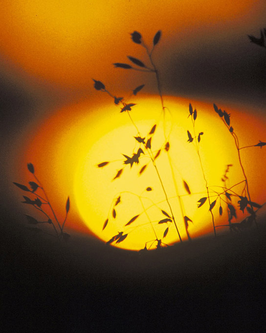
The sun emits an enormous amount of electromagnetic radiation (solar energy). Humans can see only a fraction of this energy, which is referred to as "visible light." The manner in which solar energy travels can be described and measured as waves. Scientists can determine the amount of energy of a wave by measuring its wavelength, the distance between two consecutive, similar points in a series of waves, such as from crest to crest or trough to trough (Figure 5.9).
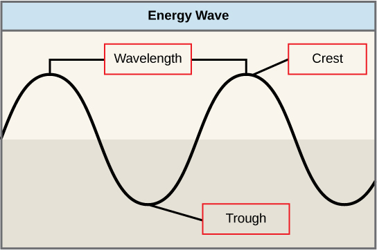
Visible light constitutes only one of many types of electromagnetic radiation emitted from the sun. The electromagnetic spectrum is the range of all possible wavelengths of radiation (Figure 5.10). Each wavelength corresponds to a different amount of energy carried.
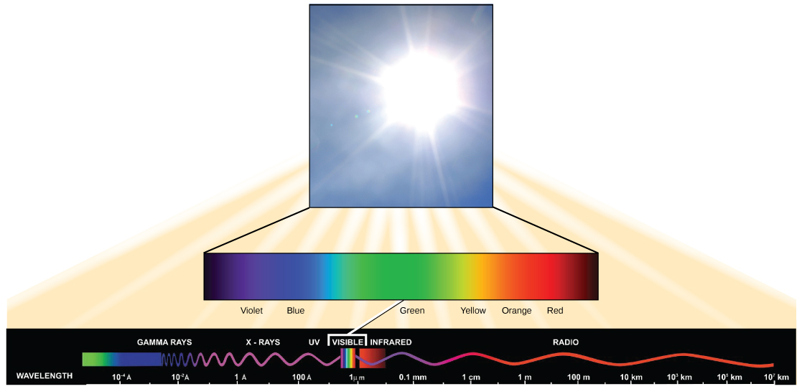
Each type of electromagnetic radiation has a characteristic range of wavelengths. The longer the wavelength (or the more stretched out it appears), the less energy is carried. Short, tight waves carry the most energy. This may seem illogical, but think of it in terms of a piece of moving rope. It takes little effort by a person to move a rope in long, wide waves. To make a rope move in short, tight waves, a person would need to apply significantly more energy.
The sun emits (Figure 5.10) a broad range of electromagnetic radiation, including X-rays and ultraviolet (UV) rays. The higher-energy waves are dangerous to living things; for example, X-rays and UV rays can be harmful to humans.
Light energy enters the process of photosynthesis when pigments absorb the light. In plants, pigment molecules absorb only visible light for photosynthesis. The visible light seen by humans as white light actually exists in a rainbow of colors. Certain objects, such as a prism or a drop of water, disperse white light to reveal these colors to the human eye. The visible light portion of the electromagnetic spectrum is perceived by the human eye as a rainbow of colors, with violet and blue having shorter wavelengths and, therefore, higher energy. At the other end of the spectrum toward red, the wavelengths are longer and have lower energy.
Different kinds of pigments exist, and each absorbs only certain wavelengths (colors) of visible light. Pigments reflect the color of the wavelengths that they cannot absorb.
All photosynthetic organisms contain a pigment called chlorophyll a, which humans see as the common green color associated with plants. Chlorophyll a absorbs wavelengths from either end of the visible spectrum (blue and red), but not from green. Because green is reflected, chlorophyll appears green.
Other pigment types include chlorophyll b (which absorbs blue and red-orange light) and the carotenoids. Each type of pigment can be identified by the specific pattern of wavelengths it absorbs from visible light, which is its absorption spectrum.
Many photosynthetic organisms have a mixture of pigments; between them, the organism can absorb energy from a wider range of visible-light wavelengths. Not all photosynthetic organisms have full access to sunlight. Some organisms grow underwater where light intensity decreases with depth, and certain wavelengths are absorbed by the water. Other organisms grow in competition for light. Plants on the rainforest floor must be able to absorb any bit of light that comes through, because the taller trees block most of the sunlight (Figure 5.11).
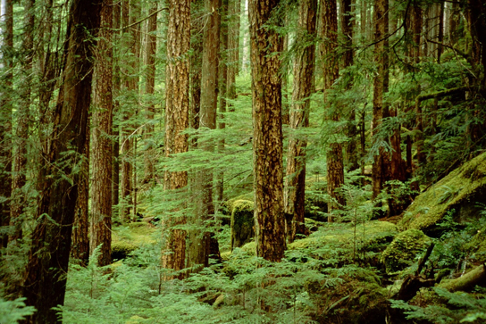
Why do plants appear green? Explain using the concepts of wavelength, absorption, and reflection. Also explain why having multiple types of pigments (chlorophyll a, chlorophyll b, carotenoids) is advantageous for a plant.
- Describe how and where photosynthesis takes place within a plant
- Explain the role of photosystems I and II
- Describe how ATP and NADPH are generated in the light-dependent reactions
The overall purpose of the light-dependent reactions is to convert light energy into chemical energy. This chemical energy will be used by the Calvin cycle to fuel the assembly of sugar molecules.
The light-dependent reactions begin in a grouping of pigment molecules and proteins called a photosystem. Photosystems exist in the membranes of thylakoids. A pigment molecule in the photosystem absorbs one photon, a quantity or "packet" of light energy, at a time.
A photon of light energy travels until it reaches a molecule of chlorophyll. The photon causes an electron in the chlorophyll to become "excited." The energy given to the electron allows it to break free from an atom of the chlorophyll molecule. Chlorophyll is therefore said to "donate" an electron (Figure 5.12).
To replace the electron in the chlorophyll, a molecule of water is split. This splitting releases an electron and results in the formation of oxygen (O₂) and hydrogen ions (H⁺) in the thylakoid space. Technically, each breaking of a water molecule releases a pair of electrons, and therefore can replace two donated electrons.
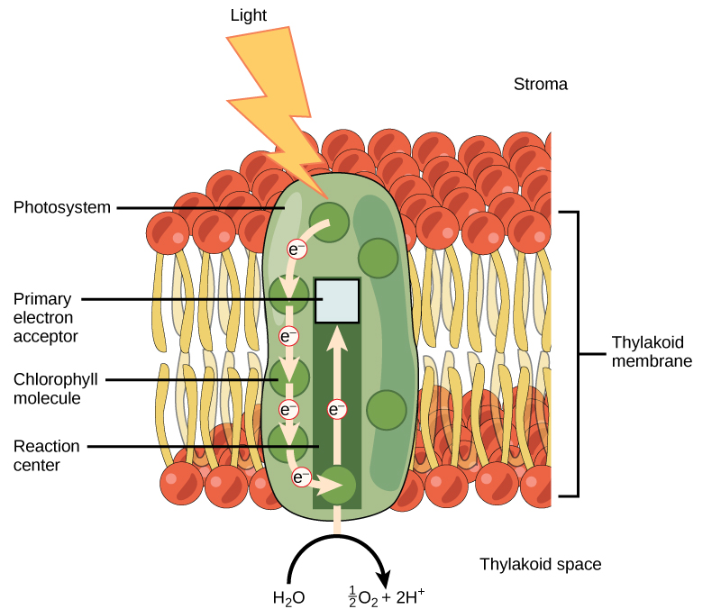
The replacing of the electron enables chlorophyll to respond to another photon. The oxygen molecules produced as byproducts find their way to the surrounding environment. The hydrogen ions play critical roles in the remainder of the light-dependent reactions.
Keep in mind that the purpose of the light-dependent reactions is to convert solar energy into chemical carriers that will be used in the Calvin cycle. In eukaryotes and some prokaryotes, two photosystems exist. The first is called photosystem II, which was named for the order of its discovery rather than for the order of the function.
After the photon hits, photosystem II transfers the free electron to the first in a series of proteins inside the thylakoid membrane called the electron transport chain. As the electron passes along these proteins, energy from the electron fuels membrane pumps that actively move hydrogen ions against their concentration gradient from the stroma into the thylakoid space. This is quite analogous to the process that occurs in the mitochondrion in which an electron transport chain pumps hydrogen ions from the mitochondrial stroma across the inner membrane and into the intermembrane space, creating an electrochemical gradient. After the energy is used, the electron is accepted by a pigment molecule in the next photosystem, which is called photosystem I (Figure 5.13).
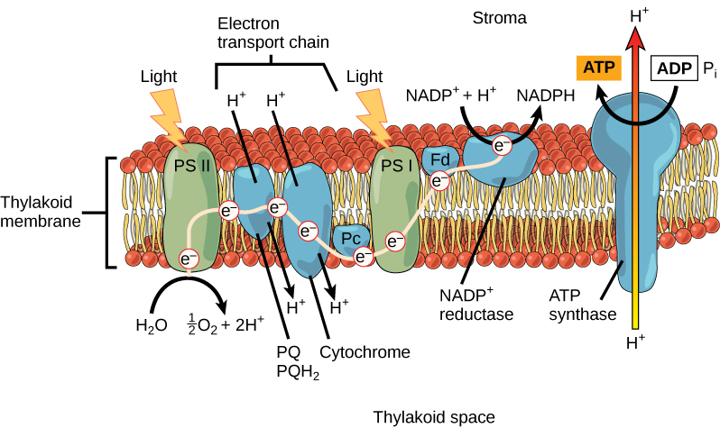
In the light-dependent reactions, energy absorbed by sunlight is stored by two types of energy-carrier molecules: ATP and NADPH. The energy that these molecules carry is stored in a bond that holds a single atom or group of atoms to the molecule. For ATP, it is a phosphate group, and for NADPH, it is a hydrogen atom. Recall that NADH was a similar molecule that carried energy in the mitochondrion from the citric acid cycle to the electron transport chain. When these molecules release energy into the Calvin cycle, they each lose either atoms or groups of atoms to become the lower-energy molecules ADP and NADP⁺.
The buildup of hydrogen ions in the thylakoid space forms an electrochemical gradient because of the difference in the concentration of protons (H⁺) and the difference in the charge across the membrane that they create. This potential energy is harvested and stored as chemical energy in ATP through chemiosmosis, the movement of hydrogen ions down their electrochemical gradient through the transmembrane enzyme ATP synthase, just as in the mitochondrion.
The hydrogen ions are allowed to pass through the thylakoid membrane through an embedded protein complex called ATP synthase. This same protein generated ATP from ADP in the mitochondrion. The energy generated by the hydrogen ion stream allows ATP synthase to attach a third phosphate to ADP, which forms a molecule of ATP in a process called photophosphorylation. The flow of hydrogen ions through ATP synthase is called chemiosmosis, because the ions move from an area of high to low concentration through a semi-permeable structure.
The remaining function of the light-dependent reaction is to generate the other energy-carrier molecule, NADPH. As the electron from the electron transport chain arrives at photosystem I, it is re-energized with another photon captured by chlorophyll. The energy from this electron drives the formation of NADPH from NADP⁺ and a hydrogen ion (H⁺). Now that the solar energy is stored in energy carriers, it can be used to make a sugar molecule.
Describe the pathway of energy in light-dependent reactions — from when a photon hits photosystem II to the production of ATP and NADPH. Where does the oxygen come from?
- Describe the Calvin cycle
- Define carbon fixation
- Identify the three stages of the Calvin cycle
After the energy from the sun is converted and packaged into ATP and NADPH, the cell has the fuel needed to build food in the form of carbohydrate molecules. The carbohydrate molecules made will have a backbone of carbon atoms. Where does the carbon come from? The carbon atoms used to build carbohydrate molecules comes from carbon dioxide, the gas that animals exhale with each breath. The Calvin cycle is the term used for the reactions of photosynthesis that use the energy stored by the light-dependent reactions to form glucose and other carbohydrate molecules.
In plants, carbon dioxide (CO₂) enters the leaf through the stomata and diffuses into the mesophyll cells and into the stroma of the chloroplast — the site of the Calvin cycle reactions where sugar is synthesized. The reactions are named after Melvin Calvin, the scientist who discovered them, and reference the fact that the reactions function as a cycle. Others call it the Calvin-Benson cycle to include the name of another scientist involved in its discovery, Andrew Benson (Figure 5.14).
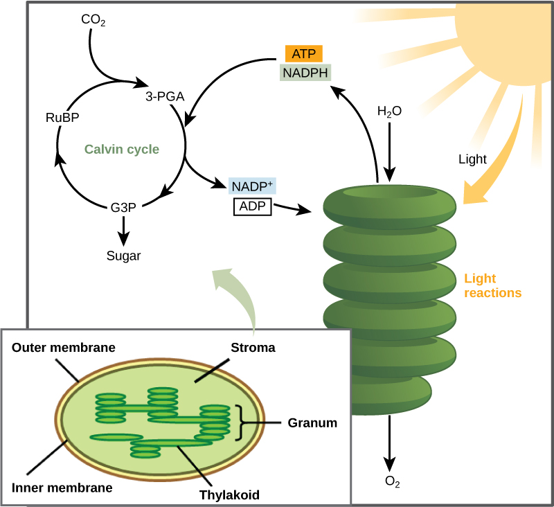
The Calvin cycle reactions (Figure 5.15) can be organized into three basic stages: fixation, reduction, and regeneration. In the stroma, in addition to CO₂, two other chemicals are present to initiate the Calvin cycle: an enzyme abbreviated RuBisCO, and the molecule ribulose bisphosphate (RuBP). RuBP has five atoms of carbon and a phosphate group on each end.
RuBisCO catalyzes a reaction between CO₂ and RuBP, which forms a six-carbon compound that is immediately converted into two three-carbon compounds. This process is called carbon fixation, because CO₂ is "fixed" from its inorganic form into organic molecules.
ATP and NADPH use their stored energy to convert the three-carbon compound, 3-PGA, into another three-carbon compound called G3P. This type of reaction is called a reduction reaction, because it involves the gain of electrons. A reduction is the gain of an electron by an atom or molecule. The molecules of ADP and NAD⁺, resulting from the reduction reaction, return to the light-dependent reactions to be re-energized.
One of the G3P molecules leaves the Calvin cycle to contribute to the formation of the carbohydrate molecule, which is commonly glucose (C₆H₁₂O₆). Because the carbohydrate molecule has six carbon atoms, it takes six turns of the Calvin cycle to make one carbohydrate molecule (one for each carbon dioxide molecule fixed). The remaining G3P molecules regenerate RuBP, which enables the system to prepare for the carbon-fixation step. ATP is also used in the regeneration of RuBP.
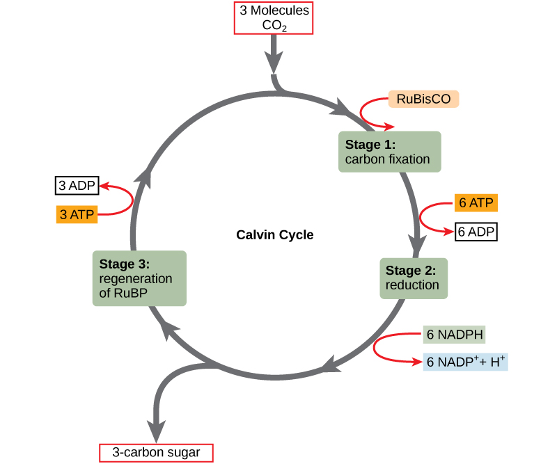
In summary, it takes six turns of the Calvin cycle to fix six carbon atoms from CO₂. These six turns require energy input from 12 ATP molecules and 12 NADPH molecules in the reduction step and 6 ATP molecules in the regeneration step.
Describe the three stages of the Calvin cycle (fixation, reduction, regeneration). Why does it take six turns of the Calvin cycle to produce one glucose molecule? What role does RuBisCO play?
- Explain how photosynthesis works in the energy cycle of all living organisms
- Describe adaptations of photosynthesis in dry-climate plants
- Explain how prokaryotes carry out photosynthesis without chloroplasts
- Connect photosynthesis and cellular respiration as complementary processes
The shared evolutionary history of all photosynthetic organisms is conspicuous, as the basic process has changed little over eras of time. Even between the giant tropical leaves in the rainforest and tiny cyanobacteria, the process and components of photosynthesis that use water as an electron donor remain largely the same. Photosystems function to absorb light and use electron transport chains to convert energy. The Calvin cycle reactions assemble carbohydrate molecules with this energy.
However, as with all biochemical pathways, a variety of conditions leads to varied adaptations that affect the basic pattern. Photosynthesis in dry-climate plants (Figure 5.16) has evolved with adaptations that conserve water. In the harsh dry heat, every drop of water and precious energy must be used to survive. Two adaptations have evolved in such plants. In one form, a more efficient use of CO₂ allows plants to photosynthesize even when CO₂ is in short supply, as when the stomata are closed on hot days. The other adaptation performs preliminary reactions of the Calvin cycle at night, because opening the stomata at this time conserves water due to cooler temperatures. In addition, this adaptation has allowed plants to carry out low levels of photosynthesis without opening stomata at all, an extreme mechanism to face extremely dry periods.
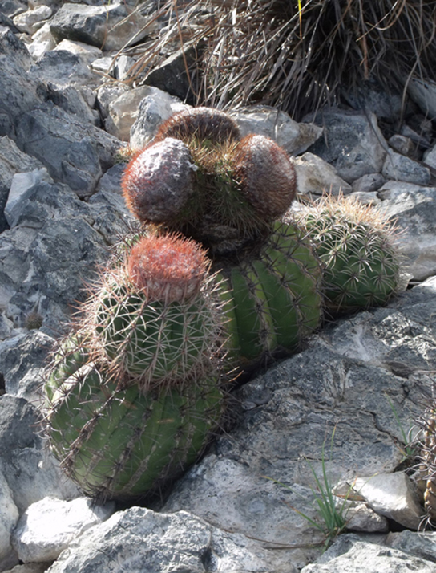
The two parts of photosynthesis — the light-dependent reactions and the Calvin cycle — have been described, as they take place in chloroplasts. However, prokaryotes, such as cyanobacteria, lack membrane-bound organelles. Prokaryotic photosynthetic autotrophic organisms have infoldings of the plasma membrane for chlorophyll attachment and photosynthesis (Figure 5.17). It is here that organisms like cyanobacteria can carry out photosynthesis.
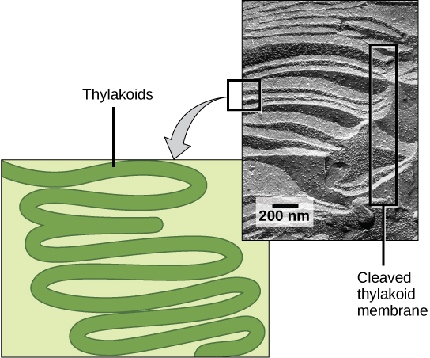
Living things access energy by breaking down carbohydrate molecules. However, if plants make carbohydrate molecules, why would they need to break them down? Carbohydrates are storage molecules for energy in all living things. Although energy can be stored in molecules like ATP, carbohydrates are much more stable and efficient reservoirs for chemical energy. Photosynthetic organisms also carry out the reactions of respiration to harvest the energy that they have stored in carbohydrates, for example, plants have mitochondria in addition to chloroplasts.
Photosynthesis produces oxygen as a byproduct, and respiration produces carbon dioxide as a byproduct.
In nature, there is no such thing as waste. Every single atom of matter is conserved, recycling indefinitely. Substances change form or move from one type of molecule to another, but never disappear (Figure 5.18).
CO₂ is no more a form of waste produced by respiration than oxygen is a waste product of photosynthesis. Both are byproducts of reactions that move on to other reactions. Photosynthesis absorbs energy to build carbohydrates in chloroplasts, and aerobic cellular respiration releases energy by using oxygen to break down carbohydrates. Both organelles use electron transport chains to generate the energy necessary to drive other reactions. Photosynthesis and cellular respiration function in a biological cycle, allowing organisms to access life-sustaining energy that originates millions of miles away in a star.
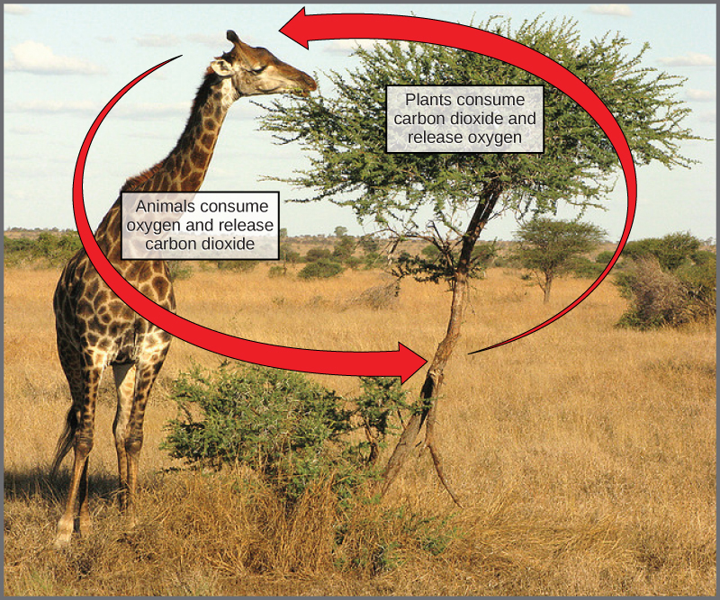
Explain how photosynthesis and cellular respiration are complementary processes. How are the reactants and products of one process related to the other? Why do plants need mitochondria if they have chloroplasts?
- Overview of photosynthesis (autotrophs, heterotrophs) — CB 5.1
- Structures (chloroplasts, thylakoids, stroma, mesophyll) — CB 5.1
- Light energy, wavelength, pigments — CB 5.2
- Light-dependent reactions (photosystems, ETC, ATP, NADPH) — CB 5.2
- The Calvin cycle (carbon fixation, RuBisCO, G3P) — CB 5.3
- Connections and energy flow — CB 5.3